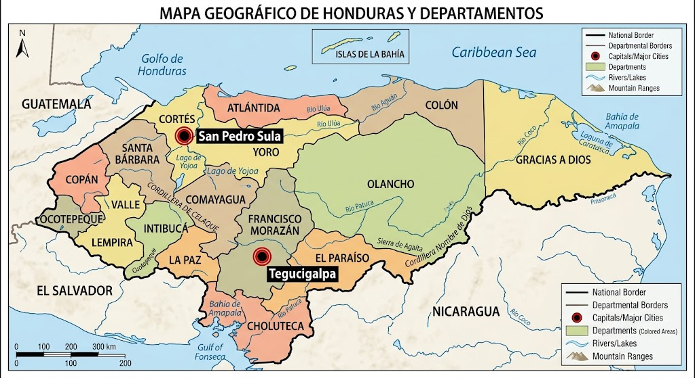

Contacto y Asistencia al Turista
Estamos aquí para ayudarte a planificar tu viaje, resolver tus dudas y orientarte durante tu experiencia en Honduras
Información de contacto
Oficina de referencia: Tegucigalpa, Distrito Central, Honduras
Teléfono: +504 2220-0020
Correo electrónico: tierracatracha2026@gmail.com
Horario de atención: Lunes a viernes, de 8:00 a. m. a 5:00 p. m.
Ubicación de oficinas
Consulta el siguiente mapa esquemático como referencia para localizar nuestras oficinas de información turística

Teléfonos de asistencia
Emergencias generales: 911
Asistencia vial: Consulta los canales oficiales de las autoridades de tránsito y emergencias
En caso de emergencia, proporciona tu ubicación y describe claramente la situación
Canales digitales
Formulario de consultas
Completa los siguientes campos para realizar una consulta, enviar un comentario o solicitar asistencia